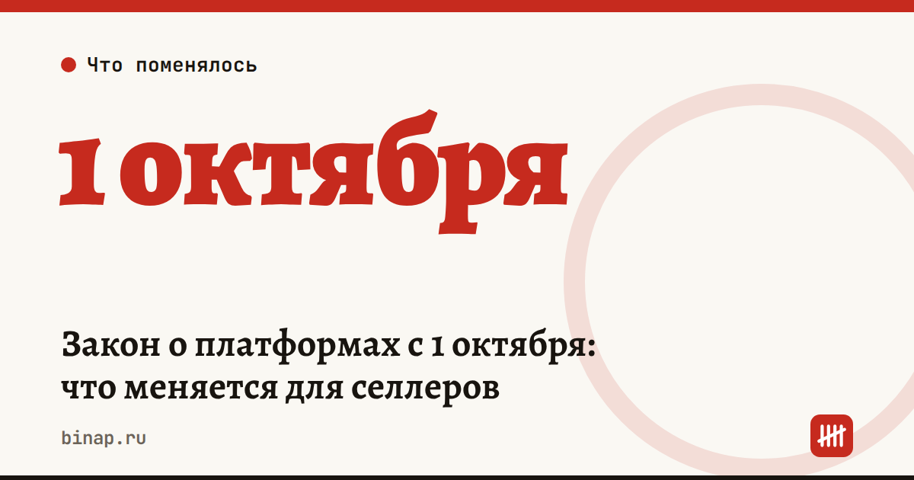

Закон о платформах с 1 октября: что меняется для селлеров

Темы:Маркетплейсы
Сроки, изменения и разборы для ИП и самозанятых — каждое утро в Telegram и MAX. Подпишитесь, чтобы не пропустить.
С 1 октября 2026 года начинает работать закон о платформенной экономике. Впервые маркетплейсы получают статус цифровых посредников с обязанностями перед продавцами, а не только перед покупателями.
Что меняется для продавца:
- Акции только с согласия. Площадка не может включить ваш товар в распродажу без вашего согласия, а также штрафовать или понижать рейтинг за отказ участвовать в акции.
- Условия меняют заранее. Об изменении договора площадка обязана предупреждать заблаговременно: у продавца появляется время пересчитать экономику.
- Акт сверки за 7 рабочих дней. Продавец вправе запросить акт сверки и другие документы по взаиморасчётам — площадка обязана выдать их в течение семи рабочих дней.
- Жалоба до суда. Перед иском нужно подать жалобу через внутреннюю систему маркетплейса. Срок ответа — 15 дней.
- Проверка продавцов. Площадка будет сверять данные ИП и компаний с госреестрами, а для товаров с обязательным подтверждением соответствия — проверять сертификаты.
Что сделать на этой неделе:
- Зайдите в кабинеты WB и Ozon и выпишите акции, в которых товар участвует сейчас. Если согласия вы не давали — зафиксируйте это скриншотом.
- Запросите акт сверки за III квартал: так вы проверите новую обязанность площадки и заодно свои взаиморасчёты.
- Проверьте, что реквизиты ИП или ООО в кабинете совпадают с ЕГРИП/ЕГРЮЛ, а сертификаты на товары действуют.
Точные формулировки и переходные положения сверяйте с текстом закона — ссылки на разборы ниже.